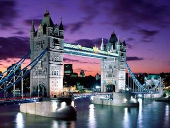
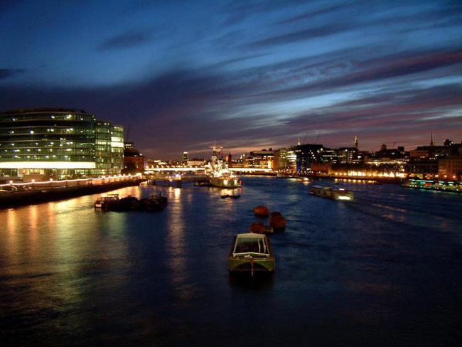
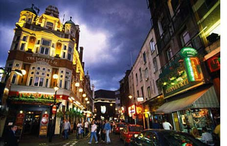
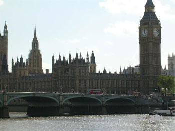

Having worked hard to break down the negative stereotypes it has enjoyed over the years, London now assumes the mantle of one of the world’s great cities with ease, crowning itself Napoleon-style by hosting its third Olympic games in 2012. It’s safe to say that London has not exuded so much confidence since the heady days of empire in the late 19th century, even despite the economic crisis that has seen the city’s status as the world’s pre-eminent financial centre take a wobble.

London has been called a ‘world in one city’ and that’s not just empty rhetoric. The brilliant feat carried off here is that while immigrants, the city’s life blood, continue to flow in and contribute their energy and cultures to the capital’s already spicy melting pot, London nevertheless feels quintessentially British, whether it’s those boxy black cabs, the red double deckers or those grand symbols of Britain – the mother of all parliaments at Westminster, the silhouette of Tower bridge above the muddy Thames or the already world-famous London Eye, barely a decade old.

Don’t miss these essential sights of course, but equally ensure you partake in what really makes London great: a pint and a plate of fish n’ chips by the river, a day in the park or a night out in Soho or Shoreditch. Take a deep breath and prepare to fall in love with the British capital..

Fast Facts about London
* The Great Frost In 1683 the Thames froze solid for eight weeks. A frost fair was held on the ice, with market stalls and buffoonery aplenty.
* Game, set, sweetness More than 27 tonnes of strawberries and 7000L of cream are consumed every year during the two weeks of the Wimbledon Tennis Championships.
* London characters - Harold Shand Cockney gangster played by Bob Hoskins in the 1980 film The Long Good Friday. Self-made brute-in-a-suit guvnor type done so well by on-screen Brits.
* London Characters - Ellen Bulfield During WW1, over 18,000 male bus conductors marched off to war. Ellen was one of thousands of women who replaced them and was the very last female 'clippy' to hand back the job at war's end.
* Wild animals of London If lucky you may spy such critters as hedgehogs, stag beetles, slow worms, dormice, great crested newts, badgers, bats and water voles. Rumours of werewolves abound.